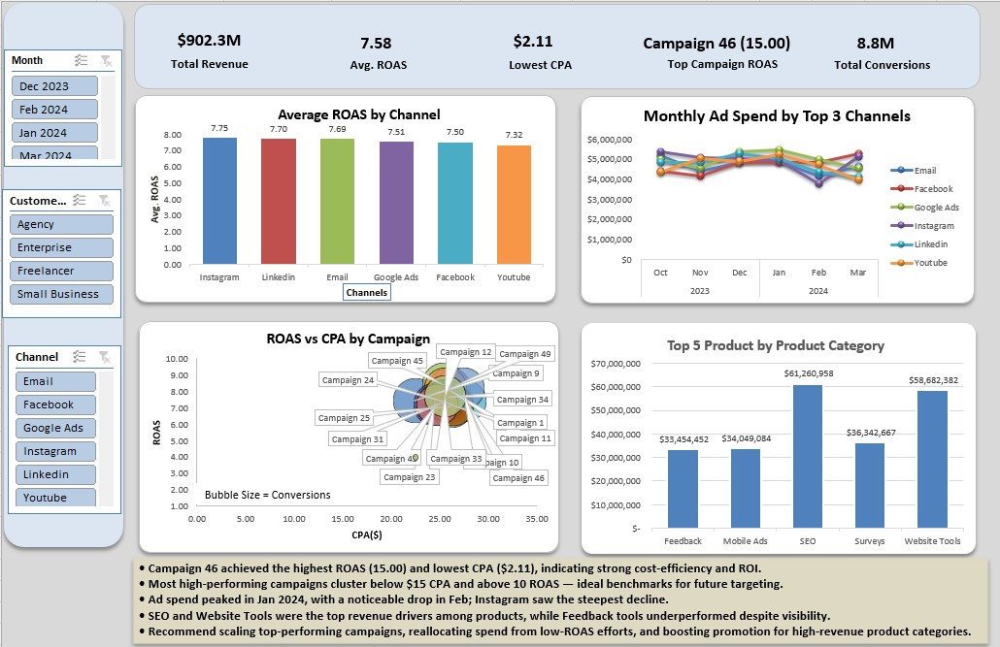

Featured Projects
Executive Sales & Customer Dashboard
Built to answer one question the business cares about: who's buying, and why? Wrote SQL to segment the customer base across demographics and spend behaviour, then built an interactive Power BI dashboard to make the answer clear.
Key Finding
One age group and profession accounted for 75% of total revenue. That's where the marketing budget should go.


Marketing Campaign Dashboard
Wanted to know which campaigns were worth the money and which were quietly burning budget. Built an Excel dashboard tracking ROAS, CPA, and spend efficiency across all channels.
Key Finding
One campaign running at 15.0x ROAS. The dashboard made the case for budget reallocation without a long report.
Global Superstore Profitability EDA
Started with a hunch that heavy discounting was hurting the business more than the numbers showed. Ran a full Python EDA to test it. The correlation came back stronger than expected.
Key Finding
-0.51 correlation between discount level and profit. Proposed a 20% discount cap as a concrete, data-backed fix.


Telco Customer Churn Analysis
Analysed customer churn patterns in a telecommunications company using Power BI. Focused on identifying the key factors driving customers to leave so the business could act on them before it was too late.
Goal
Surface the highest-risk customer segments and make the patterns visible to non-technical stakeholders.